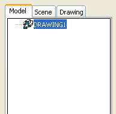

|
Для отображения иерархической древовидной структуры элементов изделия MDT имеет графический интерфейс Desktop Browser (Обозреватель). Он
вызывается из меню View > Display > Desktop browser. Его нижняя часть включает меню создания детали, сборки изделия, опции настройки MDT, настройки
сборочного каталога, настройки видимости изделия, а также команды пересчёта изделия (AMUPDATE) и пересчёта сборки.
Новая деталь создаётся командой AMNEW, или из меню Part > ?Part > ?New Part. При этом в обозревателе деталей появится соответствующая иконка.
Процесс разработки конструкций и генерации чертежей может осуществляться с использованием трех режимов отображения:
- Model (В этом режиме разрабатываются и редактируются детали и их сборки);
- Scene (В этом режиме отображаются сборки и согласуются виды);
- Drawing Создаются и редактируются ортогональные проекции, проставляются размеры и генерируются изометрические изображения).
|

|
|
В режиме Model осуществляется разработка, редактирование и проверка создаваемых конструкций. Именно с этого режима начинается процесс
проектирования. Обычно начинают с двухмерного (2D) профиля, который затем подвергается операциям выдавливания, вращения, лофтинга (создание тела с
помощью набора поперечных сечений), формирования оболочки или изгиба преобразуется в трёхмерный (3D) элемент.
|
|
В нижней части окна просмотра имеются семь кнопок. Краткая характеристика каждой из них:
- Part Filter (Фильтр детали) - блокирует установки, сделанные в
диалоговом окне Desktop Browser Filter;
- Assembly Filter (Фильтр узла) - также блокирует установки, сделанные в
диалоговом окне Desktop Browser Filter;
- Options (Опции) - открывает диалоговое окно Desktop Options (Опции рабочего стола) с нескольми вкладками для назначения многочисленных
опций;
- Catalog (Создаются и редактируются ортогональные проекции,
проставляются размеры и генерируются изометрические изображения);
- Visibility (Видимость) - выводит диалоговое окно Desktop Visibility (Видимость рабочего стола) с несколькими вкладками для задания
видимости определённых элементов;
- Update Part (Обновить деталь) - обновляет деталь;
- Update Assembly (Обновить узел) - обновляет узел.
|
В режиме Scene можно отображать на экране сборочные узлы как в подетальном объёмном виде, так и в виде окончательной сборки.
Преимуществом данного режима является то, что сборки могут формироваться на экране без дополнительных чертёжных работ. Режим Scene позволяет
объединить в сборку ранее разработанные детали и при её отображении установить коэффициент перспективы (explosion factor), определяющий
отстояние входящих в состав сборки деталей. В этом режиме можно также включить функцию вычитания для согласования проекций(tweak) и ввести линии
направления совмещения деталей (trails) для улучшения читаемости сборки.
|
|
|
В режиме Drawing на экране отображаются традиционные ортогональные проекции. Данный режим позволяет создавать виды сверху, спереди,
сбоку, сечения и разрезы, виды с увеличенным масштабом и другие вспомогательные виды. Опять же преимуществом данного режима является то, что
проекции после создания модели или сборки могут генерироваться на их основе, и при этом не требуется никаких дополнительных чертёжных работ. Этот
режим позволяет вводить дополнительные размеры и примечания, а также индивидуализировать внешний вид чертежа под существующие требования.
|
|
На панели инструментов Mechanical View собраны кнопки управления отображением.
|